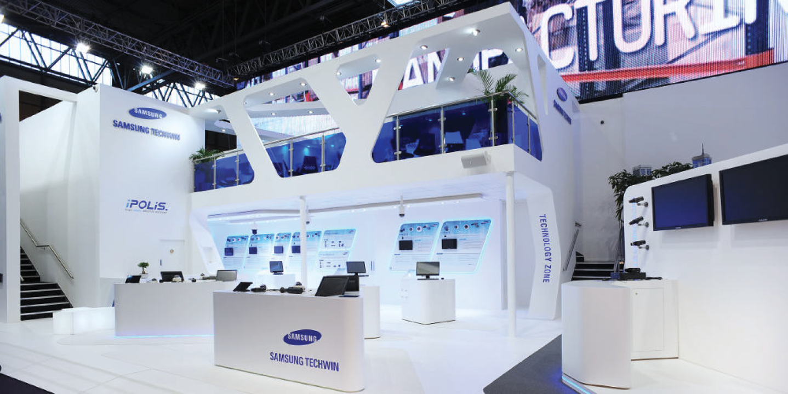
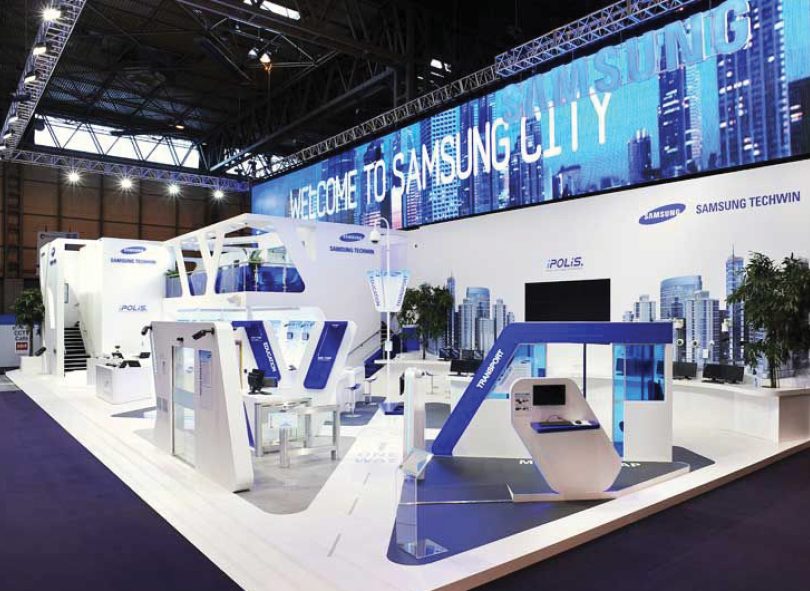
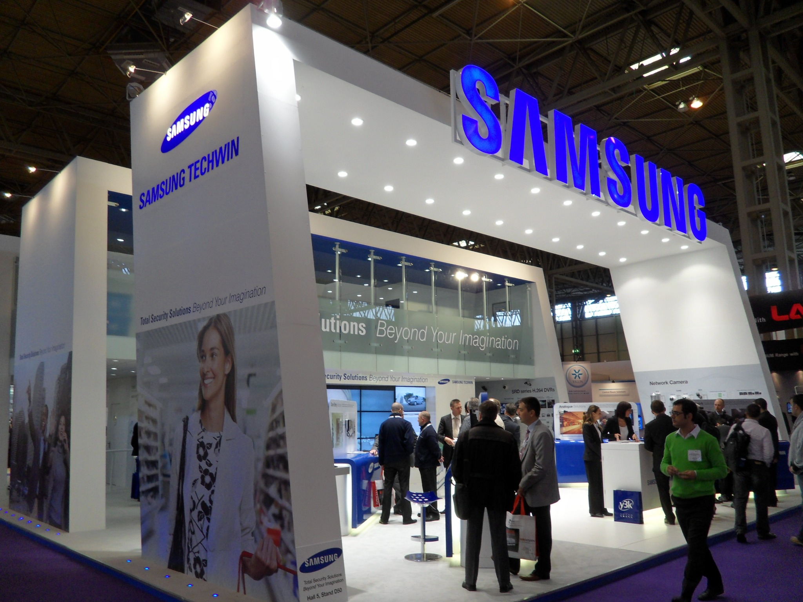
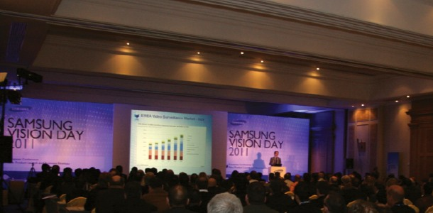

Planned the guest invitation process, event agenda and presentation schedule to connect strategic updates with live demonstrations.
Selected work / Samsung Techwin Europe
From products.
To real-world
solutions.
Turning a technology portfolio into an immersive exhibition experience—making the shift from analogue products to networked IP security solutions tangible for visitors.

02 / The challengeIndustry transition
The industry was changing.
The exhibition had to change with it.
Security exhibitions had traditionally presented individual devices and their specifications. As the market moved from analogue to IP-based systems, Samsung needed to communicate not only what each product could do, but how multiple technologies could work together in specific environments.
01 / Clarify
Market shift.
Reflect the transition from stand-alone analogue equipment to connected, solution-oriented IP security.
02 / Align
Use cases.
Work with product managers to translate technical capabilities into credible, easy-to-grasp scenarios.
03 / Amplify
Spatial story.
Organise the booth around industry applications, supported by demonstrations, visuals and a future-facing spatial identity.
03 / The insight
Visitors do not need to see more products.
They need to see how solutions work.
The opportunity was to make complex security technology understandable through the situations in which customers would actually use it.
04 / The strategic shiftProduct → Application
From a product display
to a solution-led experience.
Before / Product-led
Individual devices
Equipment arranged by product category, with features and technical specifications at the centre of the conversation.
→
After / Solution-led
Connected environments
Integrated technologies presented through recognisable real-world contexts—making their combined value easier to explore.
This diagram illustrates the communication approach, not a measured before-and-after performance comparison.
EXHIBITION EXPERIENCE / CONCEPTUAL ZONE STRUCTUREOne connected IP security story
01 / PORTSPort security
Connecting surveillance and monitoring capabilities to the needs of a complex transport environment.
02 / URBANUrban security
Showing how cameras, networks and monitoring work together across city-scale scenarios.
03 / TECHNOLOGYTechnology zone
Hands-on demonstrations and product explanations supporting the application-led narrative.
APPLICATION CONTEXT → INTEGRATED SOLUTION → LIVE DEMONSTRATION
Illustrative communication structure, not a reproduction of the original booth floor plan.
05 / Strategic alignmentThree connected decisions
One corporate story.
Multiple solution environments.
A / ZONE-BASED STORYTELLING
Lead with context.
Structure exhibition zones around application scenarios—including ports and urban environments—rather than treating each device as an isolated exhibit.
B / TECHNICAL CO-CREATION
Make it demonstrable.
Collaborate with product managers to understand how solutions operated and recreate their practical functions through visualisation and hands-on demonstrations.
C / CORPORATE EXPERIENCE
Make it unmistakably Samsung.
Combine forward-looking booth architecture with Samsung corporate identity guidelines to create a coherent, recognisable brand environment.
The booth became a place to understand the system—not simply inspect its components.
06 / Delivered experienceExhibition planning & execution
Strategy made
physical.
The exhibition translated the corporate technology direction into a visitor journey: identifiable application zones, integrated solution demonstrations, product interaction points and a distinctive Samsung-branded environment.



Corporate event / Samsung Vision Day 2011
Bringing the business strategy to the room.
Alongside the exhibition programme, Samsung Vision Day brought partners and stakeholders together for a spring business strategy conference. The event combined business direction, product demonstrations and relationship-building into one coordinated experience — giving guests an early, practical view of what was coming next.

Coordinated the host hotel, local suppliers and on-site arrangements, translating the event plan into a cohesive guest experience.
Managed the practical details beyond the conference room, from dining menus and hospitality to sightseeing itineraries and guest schedules.
Contribution
Concept to experience.
Concept to experience.
Exhibition concept development, solution-based zone planning, technical coordination with product managers, and visual and experiential translation of security solutions.
Projects delivered by Gina Jihyun Ha during her tenure at Samsung Techwin Europe, prior to founding HALO Branding. Exhibition and event delivery involved internal teams, product managers and external production and hospitality partners.
07 / Next project